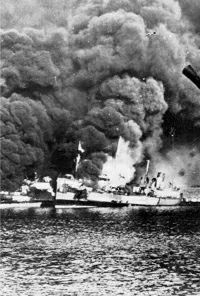

1. Can a poison become a medicine?
The chapter begins with a disturbing inversion of Paul Ehrlich's dream. Ehrlich hoped to find chemicals that would selectively cure disease. Cancer researchers now began asking whether chemicals already known to be poisonous could be made medically useful in small, controlled doses.
The distinction is critical. A chemical weapon is designed to injure living tissue. A medicine must produce an acceptable balance of benefit and harm. Yet if a poison affects some cells more strongly than others, that biological difference may contain a clue to treatment.
Mukherjee traces this idea to the military use of mustard compounds and their devastating effects on the body's blood-forming systems.
2. Mustard gas and the First World War
During World War I, chemical weapons were used to cause mass injury. Mustard gas, despite its common name, often behaved as a harmful liquid or vapor that blistered skin and damaged exposed tissues. Victims could suffer severe injuries to eyes, lungs, and other organs.
Military physicians eventually recognized that some mustard exposures also produced a dramatic reduction in blood cells. This observation became more striking during later wartime investigations. The same chemical could damage rapidly dividing tissues, including the bone marrow.
From the viewpoint of cancer treatment, that raised a frightening question. If a chemical could destroy normal white cells, might a related substance also suppress malignant white cells in leukemia or lymphoma?
3. The disaster at Bari, Italy (1943)
On December 2, 1943, German aircraft attacked Allied ships in the harbor near Bari, Italy. One American vessel, the John Harvey, carried a secret stockpile of mustard gas intended for possible wartime use. When the ship exploded, toxic material escaped into the harbor and injured people already affected by fire, smoke, and contaminated water.
The scale of suffering was enormous. Sailors and civilians experienced burns and severe injuries, and many died. The secrecy surrounding the cargo complicated the medical response, since some doctors initially did not know what substance the patients had encountered.
Investigations of those who survived the initial attack but later died revealed an unusual pattern: their white blood cells had fallen dramatically, and their bone marrow was profoundly damaged. A poisonous chemical had attacked the biological machinery responsible for producing blood cells.

4. A medical idea emerges from a catastrophe
The findings at Bari supported an earlier medical observation about mustard compounds. Their toxic effect was not confined to burns on the surface of the body. They could interfere with internal blood-cell production.
If malignant blood-forming cells were especially vulnerable to such damage, physicians might be able to use carefully controlled derivatives as anticancer drugs. The approach was dangerous because normal marrow would also be harmed. It offered no magical selectivity, only a possible difference in vulnerability that could be exploited under medical supervision.
This was a long way from Ehrlich's ideal magic bullet, but in a field with almost no successful systemic therapies, even an imperfect treatment could be scientifically significant.
5. Goodman, Gilman, and the first nitrogen-mustard studies
Researchers Louis Goodman and Alfred Gilman investigated nitrogen-mustard compounds at Yale. They first studied effects in animals, finding that controlled injections could sharply reduce white-cell production. They then worked with surgeon Gustaf Lindskog on a clinical experiment involving a man suffering from lymphoma.
In 1942, the patient received experimental treatment. His swollen cancerous lymph nodes shrank dramatically, producing a temporary remission. For physicians accustomed to relentlessly growing tumors, the effect seemed remarkable. But like Farber's later antifolate remissions in leukemia, the improvement did not last; the cancer returned.
Wartime secrecy delayed publication. Goodman and Gilman's findings were eventually published in 1946. The results helped establish that an injected chemical could produce a systemic response in a cancer involving lymphatic tissue.
6. Two different routes to chemical treatment
By the late 1940s, researchers had reached systemic cancer chemotherapy through more than one path. Farber's antifolates were based on blocking a nutrient-related biochemical process necessary for cell division. Nitrogen mustards were based on controlled exposure to a substance that damaged rapidly dividing cells.
| Approach | Historical reasoning | Major problem |
|---|---|---|
| Antifolates | Interfere with folate-dependent DNA synthesis | Normal dividing cells also need folate |
| Nitrogen mustards | Exploit the destructive effects of certain toxic chemicals | Healthy tissues and bone marrow are damaged too |
Both approaches could produce temporary responses. Neither had yet solved the enormous challenge of producing a lasting cure with acceptable toxicity.
7. George Hitchings searches for molecular decoys
In another laboratory, biochemist George Hitchings was applying the broader idea of selective chemistry to biological molecules. Inspired by the possibility of blocking pathways needed for DNA and RNA synthesis, he worked on designing decoy compounds that resembled substances cells normally use.
His approach required repeated chemical synthesis and biological testing. Academic scientists sometimes dismissed such work as a speculative search through many chemicals without enough basic knowledge. Yet it created an opportunity to discover drugs experimentally while more detailed theory was still developing.
Hitchings's group would make its most important advances with the help of Gertrude Elion.
8. Gertrude Elion's difficult early career
Gertrude “Trudy” Elion had strong scientific abilities and a master's degree in chemistry, but opportunities for women in research were limited. She struggled to secure a suitable laboratory position and took jobs outside academic science, including work involving food quality. Hitchings hired her in 1944.
Elion approached the problem of chemical therapy with remarkable energy. She focused on purines, a family of molecules involved in building nucleic acids. By modifying their structures, she hoped to create compounds that looked sufficiently similar to natural building blocks to interfere with cellular growth.
The idea resembled the false-key concept introduced with antifolates: a chemical imitator might obstruct a process that cells need to divide. Many candidates were useless or excessively toxic, but the work gradually produced promising molecules.

9. The discovery of 6-mercaptopurine (1951)
In 1951, Elion identified 6-mercaptopurine (6-MP), a purine-related compound. It raised safety concerns during preliminary testing and was nearly abandoned. But interest in experimental cancer drugs had increased after early responses to mustard compounds and antifolates.
Researchers at Memorial Hospital, including Joseph Burchenal and Mary Lois Murphy, began testing 6-MP in children with acute lymphoblastic leukemia. The drug sometimes produced remarkably rapid decreases in leukemia cells. In some patients, malignant cells became difficult to detect within a short time.
Yet the pattern remained painfully familiar: the remissions were temporary. Leukemia often returned after only weeks. The drug was active, but it was not enough by itself to eliminate the disease permanently.
10. Progress without a permanent cure
By the early 1950s, several chemical strategies had produced responses in patients with cancers that doctors once believed could not be treated systemically. Aminopterin and related antifolates suppressed some leukemias. Nitrogen-mustard derivatives produced temporary responses in lymphoma. 6-MP became another potent experimental weapon against leukemia.
But none erased the central difficulty: malignant cells could survive treatment and the disease could recur. Moreover, the chemicals injured healthy tissue. Chemotherapy was becoming real, but it remained harsh, unpredictable, and frequently unable to save patients long-term.
11. The deeper meaning of Chapter 11
The chapter's moral complexity is unavoidable. A medical advance emerged partly from the observation of injuries caused by chemical weapons. That does not justify the suffering caused by warfare; it shows how scientists sometimes learn biological facts from horrific events.
The stories of Hitchings and Elion also demonstrate how therapeutic discovery depends on patient experimental work, opportunities for neglected scientists, and the ability to pursue a promising chemical line through many failures. Their effort did not instantly produce a cure, but it widened the range of possible treatments.
Chapter takeaway: Early systemic chemotherapy developed from both nutrient-blocking chemistry and the dangerous properties of toxic compounds. These drugs showed that cancer could respond, but the recurring problem of relapse remained unsolved.